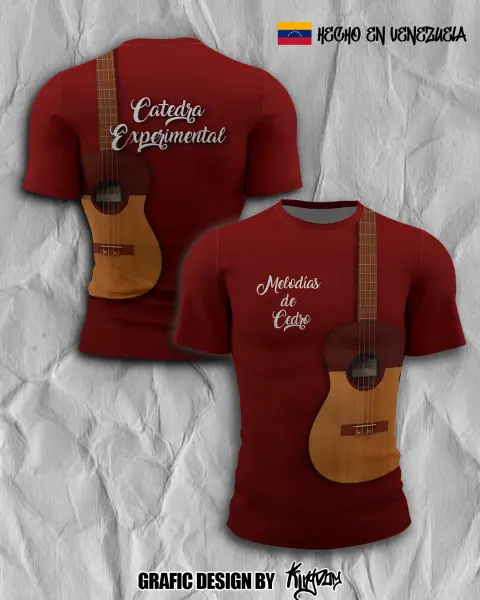

Academia de Cuatro — Franela sublimada
Diseño e impresión por sublimación para la Academia de Cuatro en microfibra Dry-Fit con colores vivos y secado rápido.
Clic para ver detalle
Clic para ver detalle